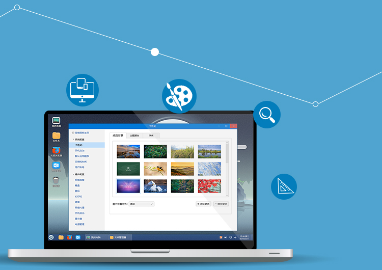

<div class="main wide">

<div class="text" style="position:absolute; top:0px; left:290px">

<div><h1>New Desktop Environment</h1></div>
<div><h2>
<p>UKUI is a desktop environment customized for Chinese users. Start menu、task bar、table icon、file manager and control panel, beautiful system theme and familiar using experience are supported.</p>
</h2></div>

</div>



</div>
